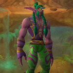
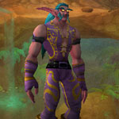
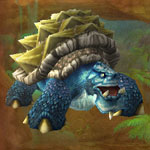
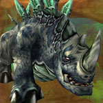
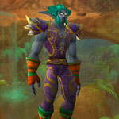
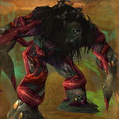
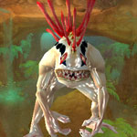

You can find the Wailing Caverns dungeon within Northern Barrens, Kalimdor.
The coordinates of the cave entrance is (39.0,69.1)


Route:
Map 1Map 2Map 3Map 4


Run back to the beginning of the dungeon and start the escort quest (speak with Muyoh) to kill the last boss, follow him around killing waves of mobs.

Bosses:
1. Lady Anacondra2. Lord Pythas3. Lord Cobrahn0. Kresh (optional boss)4. Skum5. Lord Serpentis6. Verdan the Everliving7. Mutanus the Devourer
Quick Boss Tactics:
/i Uses sleep spell on a player. Casts lightning bolt on current target. Uses Healing Touch.
/i Uses sleep spell on a player. Casts lightning bolt on current target. Uses Healing Touch.

Quick Boss Tactics:/i Uses sleep spell on a player. Casts lightning bolt on current target. Uses Healing Touch.

Quick Boss Tactics:/i Turns into a serpent. Uses sleep spell on a player. Casts lightning bolt on current target. Uses Healing Touch.

Quick Boss Tactics:/i Drops a shield. Bites current target reducing their armor.

Quick Boss Tactics:/i Uses Chained Bolt hitting other nearby players.

Quick Boss Tactics:/i Uses sleep spell on a player. Casts lightning bolt on current target. Uses Healing Touch.

Quick Boss Tactics:/i Inflicts physical damage rooting players & knocks them down.

Quick Boss Tactics:/i Kill the waves of adds, then boss will appear. Can stun, fear & sleep players.